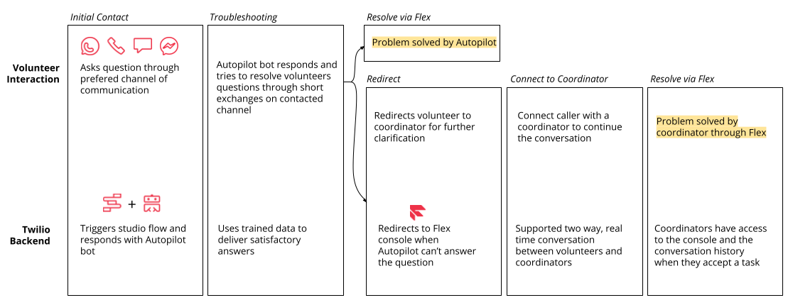

How it works
This template provides a quick way to build a simple communication center for volunteer coordinators in the disaster and crisis response space. Volunteers that have general, logistical questions can contact a Twilio phone number to get answers almost instantaneously. A pre-trained Autopilot bot exchanges a few messages to understand the question and tries to deliver a helpful response. In the case that the bot cannot fully understand the volunteer's question, it will redirect the conversation to an actual coordinator. While keeping the same conversation, a coordinator can respond in live time via the Flex console to ensure that the volunteer's question gets answered quickly and accurately.
Out of the Box
Congrats! You have successfully deployed your own instance of a volunteer communication center.
Twilio Flex
While bots a great, they don't replace humans. When the bot cannot answer a question for the volunteer, the Studio Flow passes the message on to a Flex console. The request will show up in as an incoming issue which a coordinator can accept and address. They will continue the conversation where the Autopilot bot left off in order to get the volunteer help as fast as possible.
Go to Flex